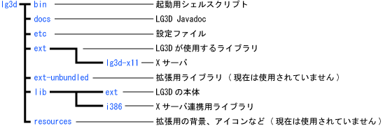
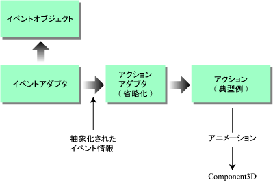

Java ベースの次世代デスクトップ環境
米 Sun Microsystems
ソフトウェア CTO オフィス，先進開発グループ Project Looking Glass リードエンジニア
川原 英哉 KAWAHARA Hideya
櫻庭 祐一 SAKURABA Yuichi
sakuraba@tk.airnet.ne.jp
http://www5.airnet.ne.jp/sakuraba/java/
初出: Software Design 2004 年 11 月号
前回 (2004 年 10 月号) の『基礎編』では，Project Looking Glass (以後 LG3D と略します) の概略や開発の経緯などに関して解説しました． 今回から 2 回に渡って掲載する『実践編』では，実際に動かしてみましょう! 今回は，LG3D のインストールと実行，サンプルのビルド，また LG3D プログラミング の導入部分について解説していきます． 準備は良いですか？
本節では実際に LG3D をインストールして動作させます． また，簡単なサンプルも動かしてみたいと思います．
前回紹介したように，LG3D は java.net でオープンソースとして公開されいてます． URL は，https://lg3d-core.dev.java.net/ です．
現在は Linux 版が公開されていますが，今後 Solaris x86 版が提供される予定です． 詳しくは後述しますが，LG3D を一部の機能のみが使えるモードで起動させるならば，現状でも Windows や Solaris で動作させることが可能です．
LG3D をダウンロードするには，上記のページの右側の［プロジェクトツール］の中の［ドキュメント］を選択します． ツリーが表示されるので，その中から stable_builds をクリックすると，左側にダウンロードできるファイルの一覧が表示されます（図1）． この中で最もバージョンの新しいものをダウンロードします． 原稿執筆時点（2004 年9 月）では release_0.51 が最新版です． この場合，ダウンロードするファイルは lg3d-rel-0-5-1.tar.gz になります．
| 図 1 LG3D のダウンロード画面 |
|---|
LG3D を動かすにはなるべく性能の高いグラフィックカードが必要です． LG3D のパフォーマンスは CPU の性能よりも，グラフィックカードの性能の方に大きく影響されるからです． グラフィックカードは OpenGL 1.2 以上をサポートしたハードウェアアクセラレーション機能を持ったものを使うようにしてください． また，グラフィックカードのドライバも，GPU ベンダのサイトからなるべく最新のものをダウンロードして使うようにしましょう．
最近のグラフィックカードは NVIDIA とATI が二大勢力ですが，どちらかというと NVIDIA の GeForce のほうが相性が良いようです注1．
LG3D を動作させるにはディスプレイの色深度を 24 ビットにしてください． もし，24 ビット以外である場合，X11 の設定を見直す必要があります． SaX2 などの画面設定用ツールがある場合は，それを使用して色深度が行えます． ツールがない場合は X11 の設定ファイル (/etc/X11/XF86Config ファイルなど) を直接編集します． 設定方法の詳しい説明は参考文献 1 を参照してください．
次に LG3D が使用するソフトウェアをダウンロードし，インストールします．
それぞれのバージョンは原稿執筆時点のものです． この中でJava 3D 1.3.2 はまだ正式リリースされていないので，Experimental_Builds の中の最新のもの (原稿執筆時点では 1.3.2-build5) をダウンロードしてください． JAI はパッケージがいくつか存在しますが，その中の JDK Install を選択します．
ダウンロードしたパッケージはそれぞれ指示にしたがってインストールしてください． これで準備は整いました．
LG3D のインストールは先ほどダウンロードした lg3d-rel-0-5-1.tar.gz をインストールしたいディレクトリに展開するだけです． 展開したあとのディレクトリ構造を図 2 に示します．
Project Looking Glass は大きく分けて，Java で記述された部分と，X サーバとの連携部分から構成されています． Java で記述されたクラスは lib/ext/lg3d-core.jar にまとめられています． Xサーバとの連携部分は lib/i386 以下のディレクトリに配置されています．
ext ディレクトリは LG3D が使用するライブラリや，X サーバなど，etc ディレクトリには設定ファイル，docs ファイルにはJavadoc がおいてあります． また，起動のためのシェルスクリプトは bin ディレクトリに配置されています．
|  |
| 図 2 LG3D のディレクトリ構成 |
|---|
LG3D には 2 種類の起動方法があります． 一方が X11 の 1 つのアプリケーションウィンドウとして起動させる方法，もう一方が LG3D が X11 のセッションとなるフルスクリーンで起動する方法です．
ウィンドウで起動させる場合，LG3D の 3D アプリケーションだけがサポートされます． X11 のネイティブアプリケーションを LG3D の 3D 空間内で動作させるにはフルスクリーンで起動させる必要があります．
まずは，ウィンドウとして起動して見ましょう． ここでの実行例は Fedra Core 2 を使用しています．
ウィンドウとして起動させるには，LG3D を展開したディレクトリの下にある bin ディレクトリにある lg3d-dev シェルスクリプトを実行します． 正常に起動すれば図3 のようなウィンドウが表示されるはずです．
もし表示されなかったら，/var/temp/lgserver.log に出力されているログを見てみましょう． それぞれの問題については参考文献 1 のトラブルシューティングの項に対処方法が記述されています．
ウィンドウとして起動させる場合は，Windows や Solaris などほかの OS でも起動させることができます． Windows では，bin ディレクトリにある lg3d-dev.bat バッチファイルを用いて起動させます．
ウィンドウとして起動する方法ははあくまでも 3D アプリの開発/テスト用のために存在しています． そのため，X11 のネイティブなアプリケーションなどは動かすことができません． これらのアプリケーションを動作させるにはフルスクリーンで動作させる必要があります．
フルスクリーンで起動する方法は，現在使用している X11 のセッションの代わりになります． 通常X11 のセッション管理には xdm や gdm などが使用されているので，これらを停止させる必要があります． 停止させる方法はディストリビューションによって異なりますが，ランレベルを変更したり，chkconfig コマンドを使用してサービスを停止させる方法などがあります．
X11 のセッションが停止したら，コンソールから bin ディレクトリにある lg3d-session シェルスクリプトを実行します． このシェルスクリプトの起動は root で行ってください． 正常に起動できればフルスクリーンで LG3D が表示されるはずです．
なお，Fedra Core 2 などのディストリビューションではキーボードを初期化できないため起動できない場合があります． この問題に対処するには X11 の設定ファイル (Fedra Core 2 の場合: /etc/X11/xorg.conf) を編集する必要があります． 設定ファイルの中にキーボードの Input Device セクションがあります． この中の
Driver “keyboard”
という部分を次のように変更します．
Driver “kbd”
また，この変更を加えたあとでも，通常の X サーバは問題なく動作します．
以上の操作を行っても起動しない場合は，/var/tmp/lgserver.log や X11 のログファイルをご覧ください．
ウィンドウで起動しているのに，フルスクリーンでは起動しない場合は，グラフィックカードの設定に問題がある場合が多いようです． もう一度，グラフィックカードのドライバや設定を見直してみてください．
LG3D が起動できたので，さっそく操作してみましょう．
LG3D のスクリーンの下部には青の半透明なバーがあります． これがタスクバーです． 左側のアイコンがアプリケーションの起動を行うショートカット，右側が背景の変更となっています． 一番右側のドクロのアイコンが終了です．
フルスクリーンモードでは，一番左側のアイコンで xterm を起動し，そこからほかのアプリケーションを起動させることができます (図 4)． ただし，まだ LG3D が対応していないアプリケーションも多くあるので，すべてのアプリケーションを動作させられるわけではありません．
アプリケーションのウィンドウは非アクティブな状態のとき半透明，アクティブになると不透明に表示されます． また，アクティブになるとちょっとだけウィンドウが前に出てくるようになっています． ウィンドウを移動させると，移動が終了したときにウィンドウがブレーキのゆり戻しのように動きます． このようなアニメーションが LG3D にはいろいろとちりばめられています． 詳しくは後述しますが，アニメーションを行うための API も要されています．
その他の LG3D の操作を表 1 に示しました． こういうことは一度試してみるのが一番です． ぜひ，遊んでみてください．
| 図 3 ウィンドウとしてのLG3D の起動 | 図 4 LG3D でのアプリケーションの起動 |
|---|
| 表 1 LG3Dの操作 | ||||||||||||||||
|---|---|---|---|---|---|---|---|---|---|---|---|---|---|---|---|---|
|
注1) ATI のRadeon でも動作するのですが，障害もいくつか報告されています．
普通に使う分にはバイナリパッケージをそのまま使うので全然問題ないのですが，自作の 3D アプリケーションを作るときなどは LG3D をソースからビルドする必要があります．
そこで，サンプルを作る前にソースからのビルドを行ってみましょう！
LG3D は現段階ではソースパッケージは提供されていません． このため，ソースを手に入れるには java.net の CVS から取得します． java.net の CVS にアクセスするには java.net への登録が必要です． 登録は無料ですので，この機会にぜひ登録をお勧めします．
java.net に登録できたら次は CVS からソースのダウンロードを行います． CVS のサーバ名は cvs.dev.java.net です． 図 5 のように CVS にログインしlg3d-coreをチェックアウトします．
username の部分に java.net のユーザ名を入れてください． 同様に password にはパスワードを入力してください． また，CDViewer などのサンプルが含まれている lg3d-demo-apps も同時にチェックアウトします． もちろん，CVS クライアントに Eclipse などのツールを使ってもかまいません．
|
|
| 図 5 LG3Dソースのダウンロード |
|---|
LG3D のビルドには Ant が必要になります． インストールしていない場合は http://ant.apache.org/ からダウンロードして，インストールしておいてください．
LG3D のビルドは非常に簡単です． 単に lg3d-core ディレクトリに移動して ant を実行するだけです (図 6)．
lg3d-core のビルドを行うと，自動的に lg3d-demo-apps もビルドします． ビルドが終了すると release ディレクトリが作成され，その下のlg3d ディレクトリにリリースパッケージが作成されます． lg3d/bin ディレクトリの lg3d-dev/lg3d-session シェルコマンドを使用して LG3D を起動させることができます．
|
|
| 図 6 LG3Dのビルド |
|---|
lg3d-demo-apps には CDViewer や Lg3dHelp などが含まれていますが，その他にチュートリアル用のサンプルが 3 つ含まれています． 本稿後半部分および次回でこれらのコードについて解説しますが，その前にこれらをコンパイルして使えるようにしてみましょう．
チュートリアル用サンプルは org.javadesktop.lg3d.apps.tutorial パッケージにある Tutorial1.java，Tutorial2.java，Tutorial3.java の 3 つになります． ソースは lg3d-demo-apps/src/classes/ ディレクトリ以下にあります．
実を言うと，これらのクラスファイルはすでに lg3d-core.jar に含まれています． しかし，タスクバーに起動用のショートカットがないので，実行できません． そこで，以降ではタスクバーにこれらのクラスの起動用ショートカットを登録してみましょう．
タスクバーを表示しているクラスは， org.javadesktop.lg3d.scenemanager.utils.taskbar.GlassyTaskbar クラスです． ソースは lg3d-core/src/classes 以下にあります．
GlassyTaskbar クラスの initialize メソッドでアプリケーションのショートカットを登録しています． ショートカットは org.javadesktop.lg3d.utils.component.Pseudo3DShortcut クラスで表されています．
initialize メソッドの中で Pseudo3DShortcut オブジェクトを登録している部分に，チュートリアル用のサンプルクラスのショートカットを加えたものが，リスト 1 です． 追加部分は黄色で示しました．
Pseudo3DShortcut のコンストラクタの第 1 引数がアイコンの画像ファイル，第 2 引数がアイコンの大きさ，第 3 引数が実行するコマンドになります． 現状では，Java のアプリケーションは別プロセスではなく同一の VM 上で動作するようになっています．
また，アイコン用の画像を用意するのも面倒なので，チュートリアル用には CDViewer のアイコンを借用させてもらいました．
| リスト 1 ショートカットの登録部分 | ||||||||||
|---|---|---|---|---|---|---|---|---|---|---|
|
これでビルドします． 前述したように，単にビルドするだけでサンプルも含めてビルドをします． 実行すると図 7のようにタスクバーに CD のアイコンが 4 つ並びます． アイコンをクリックすればサンプルを起動させることができます．
図 7 では Tutorial3 クラスを実行しています． どうです，かっこいいでしょう． こんなアプリケーションも簡単に書くことができるのです．
| 図 7 チュートリアルの実行画面 |
|---|
では，実際にサンプルプログラムの中身を見ていくことにしましょう． 本節では，サンプルを利用して，LG3D のプログラミングの導入部分を解説します．
LG3D の API は大別して，3D アプリケーション構築のための API とシーンマネージャ (ウィンドウマネジャの 3D 版) 向けの APIに分けることができます． 今回は使用頻度の高い 3D アプリケーション向けの API の基本的な部分について解説します．
ところで本プロジェクトはまだ新しく，API の変更も随時行われています． 本稿で説明するような基本的な部分ですら将来に渡って API が更新される可能性があることをご承知おきください．
そうですね． とりあえず LG3D の非常に簡単なコードを眺めてみましょう． 前節で紹介した Tutorial1 クラスをリスト 2 に示します (コメントは簡略化しました)．
| リスト 2 Tutorial1 のコード | ||
|---|---|---|
|
画面上に薄緑色の四角い箱を表示するだけのアプリケーションです． 勘の良い方なら何をやっているか大方察しがつくかもしれませんね． 以下ではこのコードを読むために必要な情報を提供していきます．
アプリケーションプログラミングに関連する LG3D の API は，大別して次の3種類に分けられます．
パッケージ org.jdesktop.lg3d.sg 以下にあるクラスは，パッケージ名は異なりますが基本的には Java 3D のサブセットです． 3D の物体を描画する際に利用します． 将来的に情報家電などリソースに制限の多い環境への移植の可能性を残すために，Java 3D に比べ API を単純化しました． 複雑であまり利用されない機能や double を引数に持つメソッドなどが割愛されています． これらのクラスの利用方法は Java 3D 関連の書籍など (たとえば参考文献 2) をご参照ください．
また，後述のユーティリティクラスで，よく使う Java 3D の機能をより扱いやすい形式で提供しています． 実際，リスト 2 では Java 3D の機能は直接使っておらず，Box クラスといったユーティリティクラスを代わりに利用しています．
パッケージ org.jdesktop.lg3d.wg 以下で提供されるクラスで基本となるのは以下の 4 クラスです．
これらは AWT で対応するクラス (クラス名の最後に「3D」が付かないもの) と同様な機能を果たします．
Component3D は，すべての LG3D ウィジェットコンポーネントの基盤となるクラスです． Container3D は Compoent3D を派生したクラスで，複数の Compoent3D オブジェクトを「チャイルド」として保持することができます．
Frame3D は Container3D を派生したクラスで，AWT の Frame と同様に LG3D 対応アプリケーションの大元のコンテナ，ルートコンテナになります． Cursor3D は Comonent3D を拡張したクラスで，すべての 3D カーソルの基盤となります． アプリケーションはこのクラスを派生して独自のカーソルを定義したり，定義済みのカーソルを利用したりできます． ここまで読むとリスト 2 の意味がよりよく見えてきたのではないでしょうか．
パッケージ org.jdesktop.lg3d.util 以下のサブパッケージに用意されたユーティリティクラス群にはいくつかの種類があるのですが，本稿で利用するものは次の3種類です．
Java 3D 関連ユーティリティとは，利用法を簡便にするための機能を追加するために Java 3D のクラスを派生したもので，例としてはリスト 2 の簡単なプログラム例で利用した SimpleAppearance や Box が挙げられます． これらを含めユーティリティクラスの利用方法は比較的簡単なので，以下では使うその場で説明していきます．
イベントアダプタとアクションクラスは若干複雑ですので，次節でもう少し詳しく説明します．
最後のイベントアクションクラスは，イベントに対するあるまとまった処理を提供するユーティリティクラスです． たとえばマウスのドラッグによるオブジェクトの移動を実装するクラスがその一例です． この利用方法も簡単なので使うその場で説明していきます (次回に取り上げます)．
『コンセプト証明バージョン (Proof-of-concept Version)』の経験から，マウスなどの挙動に対してアニメーションを利用した自然なユーザフィードバックを施したことが，LG3D の今までの成功に大きな役割を担ったことがわかりました．
このようなフィードバックをプログラマがアプリケーションで簡単に実装できるように，その要素を部品化して提供することは LG3D API デザインの目標の 1 つでした． これらの機能はイベントアダプタやアクションクラスとして，ユーティリティクラスの一部として提供されています．
図 8 にイベントアダプタとアクションクラスのうち主要なものに関して， それらの関連を示します． 『Action』と呼ばれる抽象化層をイベントを受け取るコードとアニメーションを行うコードの間に設け，それぞれの部品化を促進しています．
以降では，図 8 のそれぞれの要素について説明します．
|  |
| 図 8 イベントアダプタとアクションクラス間の関連 |
|---|
サブパッケージ eventadapter 以下に置かれたイベントアダプタクラスは，LgEventListener インターフェースを実装し，1 つまたは複数の Action インターフェースにイベントで得た情報を伝播できます． これらのクラスは，マウスなどのイベントを受け取り，アダプタごとに特定な情報の取り出して前処理をします．
その後，処理結果を引数として，Action インターフェース群 (Action インターフェースを派生したインタフェース群) で定義された performAction() メソッドを呼び出します．
サブパッケージ actionadapter 以下に置かれたアクションアダプタクラスは，Action インターフェース群の最低でも 1 つを実装し，1 つまたは複数の Action インターフェースにイベント情報を伝播します． たとえば，ある形式の performAction() の呼び出しを別の形式に変換する役割を果たします．
アクションアダプタは省略することも可能ですし，複数段重ねることも可能です．
サブパッケージ action 以下に置かれたアクションクラスは，Action インターフェース群の最低でも 1 つを実装します． これらのクラスは performAction() メソッドを介して前処理されたイベント情報を受け取り，典型的には Component3D オブジェクトに対してアニメーションを施します．
リスト 3 に上述のクラスを利用した簡単なコードを示します． これは sourceComp で指定される Component3D オブジェクトがクリックされるたびに，targetComp で指定される Component3D オブジェクトを 1 秒かけて 180 度行ったり来たり回転する，というものです．
| リスト 3 イベントアダプタとアクションクラスの利用例 | ||
|---|---|---|
|
MouseClickedEventAdapter クラスはイベントアダプタの一種です． LgEventListener インターフェースを実装しており，sourceComp に対する MouseEvent を受け取るよう自分自身を登録します．
そして，MouseEvent を受け取るたびに，指定されたアクションまたはアクションアダプタクラスの performAction() メソッドを呼び出します． この例ではコンストラクタで指定された ToggleAdapter オブジェクトの performAction を呼び出します．
ToggleAdapter クラスはアクションアダプタの一種で， 内部で boolean の状態を保持しています． この状態は performAction()メソッドが呼ばれるごとに反転し，その結果を引数に，ActionBoolean インタフェースの performAction() メソッドが呼び出されます． この例では，コンストラクタで指定された RotateAction オブジェクトの performAction を呼び出します．
RotationAction クラスは，ActionBoolean インタフェースを実装するアクションの一種です． メソッド performAction() を呼び出すと，引数が true であれば指定された角度に，false であればデフォルト値の 0 度に，指定時間で targetComp を回転します． 角度指定はラジアンで PI，度数で 180 度です． アニメーションの時間は 1,000 ミリ秒，すなわち 1 秒です．
このクラスと ToggleAdapter クラスを組み合わせるとこにより「180 度，行ったり来たり」の動作を実現しています．
ところで，このデフォルトのアニメーションは機械的ではなく，人が見ておおむね心地良いと思われるような動きをするように配慮されていることにご注目ください． LG3D の重要なポイントの 1 つです．
以上で，サンプルチュートリアルを理解するための基礎知識を解説しました． 次回は，実際にサンプルチュートリアルを解読しながら，プログラミングを体験してみましょう． また，PLG のオープンソースコミュニティに関する話題についても取り上げます．お楽しみに．
{kind=link}
{kind=link}
{kind=link}
{kind=link}